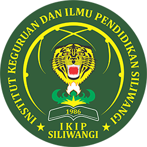

INSTITUT KEGURUAN DAN ILMU PENDIDIKAN
(IKIP) SILIWANGI
AKREDITASI INSTITUSI “UNGGUL”
SK Perubahan Bentuk Nomor: 673/KPI/I/2017
Pascasarjana: Pendidikan Masyarakat, Pendidikan Matematika, Pendidikan Bahasa Indonesia,
Pendidikan Dasar, Pendidikan Bahasa Inggris
Sarjana: Pend. Masyarakat, PB. Inggris, PB. Indonesia, Pend. Matematika, PG-PAUD, PGSD, Bimbingan Konseling
Profesi: Pendidikan Profesi Guru (PPG)
Jl. Terusan Jenderal Sudirman, Cimahi 40526. Telp. (022) 6658680, 6629735, Fax. (022) 6629913
email: info@ikipsiliwangi.ac.id, website: ikipsiliwangi.ac.id
SOAL UJIAN AKHIR SEMESTER (UAS) GENAP 2025/2026
BERBASIS PROJEK
| Mata Kuliah | : | Pembelajaran Bahasa Indonesia SD |
| Dosen Pengampu | : | Aurelia Sakti Yani, M.Pd. |
| Kelas / Angkatan | : | A3 Reguler 2025 |
| Program Studi | : | Pendidikan Guru Sekolah Dasar |
Bentuk Proyek
Ujian Akhir Semester dilaksanakan dalam bentuk proyek individual berupa penyusunan Rencana Pelaksanaan Pembelajaran (RPP) Bahasa Indonesia untuk satu kali pertemuan di Sekolah Dasar. Mahasiswa memilih salah satu jenjang, yaitu kelas rendah (kelas I–III) atau kelas tinggi (kelas IV–VI), serta menentukan satu materi/topik pembelajaran Bahasa Indonesia yang sesuai dengan jenjang tersebut.
Deskripsi Proyek
RPP dirancang sebagai rencana pembelajaran yang kontekstual, terarah, dan memiliki kekhasan pendekatan. Kekhasan dapat berupa pembelajaran berbasis permainan, pendidikan karakter atau keagamaan, STEM, proyek, masalah, literasi, budaya lokal, atau pendekatan lain yang relevan. Pendekatan yang dipilih tidak boleh sekadar menjadi label, tetapi harus tampak secara nyata dalam tujuan, langkah kegiatan, media, bahan ajar, dan asesmen. Seluruh rancangan wajib selaras dengan capaian pembelajaran serta didukung oleh sumber rujukan yang dapat dipertanggungjawabkan.
Metode Pengerjaan Proyek/Instruksi Kerja
- Menentukan konteks pembelajaran: pilih kelas rendah atau kelas tinggi, kelas/semester, materi atau topik Bahasa Indonesia, alokasi waktu, dan karakteristik peserta didik yang menjadi sasaran.
- Menganalisis capaian pembelajaran: tentukan capaian pembelajaran yang relevan, kemudian rumuskan tujuan pembelajaran yang spesifik, terukur, dan sesuai dengan kegiatan serta asesmen.
- Menentukan kekhasan pembelajaran: pilih satu pendekatan utama dan jelaskan alasan pemilihannya, ciri khasnya, serta manfaatnya bagi pembelajaran Bahasa Indonesia pada jenjang yang dipilih.
- Menyusun RPP dengan komponen sekurang-kurangnya:
- identitas pembelajaran;
- capaian dan tujuan pembelajaran;
- materi pokok dan sumber belajar;
- pendekatan/model/metode pembelajaran beserta kekhasannya;
- media dan alat pembelajaran;
- langkah pendahuluan, inti, dan penutup yang disertai alokasi waktu;
- asesmen awal, proses, dan/atau akhir beserta instrumen atau rubriknya; dan
- lampiran bahan ajar, LKPD, media, atau instrumen apabila digunakan.
- Menggunakan rujukan: cantumkan sumber capaian pembelajaran, buku ajar, artikel, atau sumber ilmiah/tepercaya lain yang digunakan. Tuliskan sitasi pada bagian yang relevan dan daftar pustaka pada akhir RPP. Gunakan sedikitnya tiga sumber, dengan sekurang-kurangnya satu sumber resmi kurikulum.
- Menulis dengan tangan: seluruh naskah utama RPP wajib ditulis tangan sendiri secara rapi dan terbaca pada kertas A4 atau folio bergaris. Lampiran berupa gambar/media boleh dicetak, tetapi uraian utama, analisis, dan penjelasan kekhasan tetap wajib ditulis tangan.
- Menjaga keaslian: RPP harus merupakan karya sendiri. Cantumkan nama, NIM, kelas, serta pernyataan keaslian bertanda tangan pada halaman terakhir.
Bentuk dan Format Luaran
- Naskah fisik: RPP tulisan tangan asli, disusun berurutan dan diserahkan secara langsung kepada dosen pengampu.
- Naskah digital: foto atau pindai seluruh halaman, termasuk lampiran dan pernyataan keaslian, digabung menjadi satu berkas PDF dan diunggah ke LMS kelas.
- Pastikan foto jelas, tegak, tidak terpotong, berurutan, dan dapat dibaca. Nama berkas: UAS_PBI-SD_NIM_Nama.pdf.
- Batas penyerahan fisik dan unggah LMS mengikuti jadwal UAS serta pengumuman dosen pengampu. Kedua bentuk pengumpulan wajib dipenuhi.
Indikator, Kriteria, dan Bobot Penilaian
| No. | Kriteria Penilaian | Bobot |
|---|
| 1 | Keselarasan Capaian dan Tujuan Pembelajaran
Ketepatan memilih capaian pembelajaran serta konsistensi tujuan, kegiatan, dan asesmen. | 25% |
| 2 | Kelengkapan dan Sistematika RPP
Kelengkapan komponen, kejelasan alokasi waktu, urutan kegiatan, media, sumber, dan lampiran. | 20% |
| 3 | Kekhasan dan Relevansi Pembelajaran
Kejelasan ciri pendekatan yang dipilih serta penerapannya secara nyata dan sesuai dengan karakteristik siswa SD. | 20% |
| 4 | Kualitas Kegiatan dan Asesmen
Keterlaksanaan kegiatan, keaktifan siswa, ketepatan instrumen, dan kemampuan asesmen mengukur tujuan pembelajaran. | 15% |
| 5 | Kualitas dan Ketepatan Rujukan
Kredibilitas sumber, ketepatan penggunaan sitasi, dan kelengkapan daftar pustaka. | 10% |
| 6 | Keaslian, Kerapian, dan Ketepatan Pengumpulan
Keaslian karya, keterbacaan tulisan tangan, kelengkapan berkas fisik/digital, dan ketepatan waktu. | 10% |
Ketentuan Penting:
- RPP yang tidak ditulis tangan atau tidak disertai naskah fisik tidak memenuhi ketentuan utama ujian.
- RPP harus menunjukkan hubungan yang jelas antara capaian pembelajaran, tujuan, kegiatan, kekhasan pendekatan, dan asesmen.
- Sumber internet tanpa penulis/lembaga yang jelas tidak dapat dijadikan rujukan utama.
- Keterlambatan atau ketidaklengkapan salah satu bentuk pengumpulan memengaruhi nilai.
Daftar Rujukan Referensi Mata Kuliah
- Badan Standar, Kurikulum, dan Asesmen Pendidikan. (2024). Keputusan Kepala BSKAP Nomor 032/H/KR/2024 tentang Capaian Pembelajaran pada Pendidikan Anak Usia Dini, Jenjang Pendidikan Dasar, dan Jenjang Pendidikan Menengah pada Kurikulum Merdeka. Jakarta: Kemendikbudristek.
- Dewayani, S. (2021). Buku Panduan Guru Bahasa Indonesia: Aku Bisa! untuk SD Kelas I. Jakarta: Pusat Kurikulum dan Perbukuan.
- Nukman, E. Y., dan Setyowati, C. E. (2021). Buku Panduan Guru Bahasa Indonesia: Lihat Sekitar untuk SD Kelas IV. Jakarta: Pusat Kurikulum dan Perbukuan.
- Mubin, M., dan Aryanto, S. J. (2024). Pembelajaran Bahasa Indonesia di Sekolah Dasar. Edu Cendikia: Jurnal Ilmiah Kependidikan, 3(3), 554–559. https://doi.org/10.47709/educendikia.v3i03.3429.
| Mengetahui, |
| Ketua Program Studi | Dosen Pengampu |
| |
| Dr. Ruli Setiyadi, M.Pd. | Aurelia Sakti Yani, M.Pd. |